Chapter 1 EDA
Carguemos las librerias
library(tidyverse)
library(Amelia)
library(dplyr)
library(moments)
library(ggplot2)
library(patchwork)
library(readxl)
library(effsize)
library(openintro)
library(nortest)
library(car)
library(coin)
library(BSDA)
library(rstatix)Conjunto de datos
Muestrame las 5 primeras filas
## avganncount avgdeathsperyear target_deathrate incidencerate medincome popest2015 povertypercent
## 1 1397 469 164.9 489.8 61898 260131 11.2
## 2 173 70 161.3 411.6 48127 43269 18.6
## 3 102 50 174.7 349.7 49348 21026 14.6
## 4 427 202 194.8 430.4 44243 75882 17.1
## 5 57 26 144.4 350.1 49955 10321 12.5
## studypercap binnedinc medianage medianagemale medianagefemale geography
## 1 499.74820 (61494.5, 125635] 39.3 36.9 41.7 Kitsap County, Washington
## 2 23.11123 (48021.6, 51046.4] 33.0 32.2 33.7 Kittitas County, Washington
## 3 47.56016 (48021.6, 51046.4] 45.0 44.0 45.8 Klickitat County, Washington
## 4 342.63725 (42724.4, 45201] 42.8 42.2 43.4 Lewis County, Washington
## 5 0.00000 (48021.6, 51046.4] 48.3 47.8 48.9 Lincoln County, Washington
## percentmarried pctnohs18_24 pcths18_24 pctsomecol18_24 pctbachdeg18_24 pcths25_over
## 1 52.5 11.5 39.5 42.1 6.9 23.2
## 2 44.5 6.1 22.4 64.0 7.5 26.0
## 3 54.2 24.0 36.6 NA 9.5 29.0
## 4 52.7 20.2 41.2 36.1 2.5 31.6
## 5 57.8 14.9 43.0 40.0 2.0 33.4
## pctbachdeg25_over pctemployed16_over pctunemployed16_over pctprivatecoverage
## 1 19.6 51.9 8.0 75.1
## 2 22.7 55.9 7.8 70.2
## 3 16.0 45.9 7.0 63.7
## 4 9.3 48.3 12.1 58.4
## 5 15.0 48.2 4.8 61.6
## pctprivatecoveragealone pctempprivcoverage pctpubliccoverage pctpubliccoveragealone pctwhite
## 1 NA 41.6 32.9 14.0 81.78053
## 2 53.8 43.6 31.1 15.3 89.22851
## 3 43.5 34.9 42.1 21.1 90.92219
## 4 40.3 35.0 45.3 25.0 91.74469
## 5 43.9 35.1 44.0 22.7 94.10402
## pctblack pctasian pctotherrace pctmarriedhouseholds birthrate
## 1 2.5947283 4.8218571 1.8434785 52.85608 6.118831
## 2 0.9691025 2.2462326 3.7413515 45.37250 4.333096
## 3 0.7396734 0.4658982 2.7473583 54.44487 3.729488
## 4 0.7826260 1.1613587 1.3626432 51.02151 4.603841
## 5 0.2701920 0.6658304 0.4921355 54.02746 6.796657La estructura de los datos
## 'data.frame': 3047 obs. of 33 variables:
## $ avganncount : num 1397 173 102 427 57 ...
## $ avgdeathsperyear : int 469 70 50 202 26 152 97 71 36 1380 ...
## $ target_deathrate : num 165 161 175 195 144 ...
## $ incidencerate : num 490 412 350 430 350 ...
## $ medincome : int 61898 48127 49348 44243 49955 52313 37782 40189 42579 60397 ...
## $ popest2015 : int 260131 43269 21026 75882 10321 61023 41516 20848 13088 843954 ...
## $ povertypercent : num 11.2 18.6 14.6 17.1 12.5 15.6 23.2 17.8 22.3 13.1 ...
## $ studypercap : num 499.7 23.1 47.6 342.6 0 ...
## $ binnedinc : chr "(61494.5, 125635]" "(48021.6, 51046.4]" "(48021.6, 51046.4]" "(42724.4, 45201]" ...
## $ medianage : num 39.3 33 45 42.8 48.3 45.4 42.6 51.7 49.3 35.8 ...
## $ medianagemale : num 36.9 32.2 44 42.2 47.8 43.5 42.2 50.8 48.4 34.7 ...
## $ medianagefemale : num 41.7 33.7 45.8 43.4 48.9 48 43.5 52.5 49.8 37 ...
## $ geography : chr "Kitsap County, Washington" "Kittitas County, Washington" "Klickitat County, Washington" "Lewis County, Washington" ...
## $ percentmarried : num 52.5 44.5 54.2 52.7 57.8 50.4 54.1 52.7 55.9 50 ...
## $ pctnohs18_24 : num 11.5 6.1 24 20.2 14.9 29.9 26.1 27.3 34.7 15.6 ...
## $ pcths18_24 : num 39.5 22.4 36.6 41.2 43 35.1 41.4 33.9 39.4 36.3 ...
## $ pctsomecol18_24 : num 42.1 64 NA 36.1 40 NA NA 36.5 NA NA ...
## $ pctbachdeg18_24 : num 6.9 7.5 9.5 2.5 2 4.5 5.8 2.2 1.4 7.1 ...
## $ pcths25_over : num 23.2 26 29 31.6 33.4 30.4 29.8 31.6 32.2 28.8 ...
## $ pctbachdeg25_over : num 19.6 22.7 16 9.3 15 11.9 11.9 11.3 12 16.2 ...
## $ pctemployed16_over : num 51.9 55.9 45.9 48.3 48.2 44.1 51.8 40.9 39.5 56.6 ...
## $ pctunemployed16_over : num 8 7.8 7 12.1 4.8 12.9 8.9 8.9 10.3 9.2 ...
## $ pctprivatecoverage : num 75.1 70.2 63.7 58.4 61.6 60 49.5 55.8 55.5 69.9 ...
## $ pctprivatecoveragealone: num NA 53.8 43.5 40.3 43.9 38.8 35 33.1 37.8 NA ...
## $ pctempprivcoverage : num 41.6 43.6 34.9 35 35.1 32.6 28.3 25.9 29.9 44.4 ...
## $ pctpubliccoverage : num 32.9 31.1 42.1 45.3 44 43.2 46.4 50.9 48.1 31.4 ...
## $ pctpubliccoveragealone : num 14 15.3 21.1 25 22.7 20.2 28.7 24.1 26.6 16.5 ...
## $ pctwhite : num 81.8 89.2 90.9 91.7 94.1 ...
## $ pctblack : num 2.595 0.969 0.74 0.783 0.27 ...
## $ pctasian : num 4.822 2.246 0.466 1.161 0.666 ...
## $ pctotherrace : num 1.843 3.741 2.747 1.363 0.492 ...
## $ pctmarriedhouseholds : num 52.9 45.4 54.4 51 54 ...
## $ birthrate : num 6.12 4.33 3.73 4.6 6.8 ...Veamos si hay datos faltantes
## NA_avganncount NA_avgdeathsperyear NA_target_deathrate NA_incidencerate NA_medincome NA_popest2015
## 1 0 0 0 0 0 0
## NA_povertypercent NA_studypercap NA_binnedinc NA_medianage NA_medianagemale NA_medianagefemale
## 1 0 0 0 0 0 0
## NA_geography NA_percentmarried NA_pctnohs18_24 NA_pcths18_24 NA_pctsomecol18_24 NA_pctbachdeg18_24
## 1 0 0 0 0 2285 0
## NA_pcths25_over NA_pctbachdeg25_over NA_pctemployed16_over NA_pctunemployed16_over
## 1 0 0 152 0
## NA_pctprivatecoverage NA_pctprivatecoveragealone NA_pctempprivcoverage NA_pctpubliccoverage
## 1 0 609 0 0
## NA_pctpubliccoveragealone NA_pctwhite NA_pctblack NA_pctasian NA_pctotherrace
## 1 0 0 0 0 0
## NA_pctmarriedhouseholds NA_birthrate
## 1 0 0Otra forma de detectar valores faltantes

Ahora hagamos la imputacion de datos faltantes
data_cancer %>%
mutate(across(
where(is.numeric),
~ ifelse(is.na(.),mean(., na.rm= TRUE), .)
)) -> dfVerificar si tiene datos faltantes nuevamente
## NA_avganncount NA_avgdeathsperyear NA_target_deathrate NA_incidencerate NA_medincome NA_popest2015
## 1 0 0 0 0 0 0
## NA_povertypercent NA_studypercap NA_binnedinc NA_medianage NA_medianagemale NA_medianagefemale
## 1 0 0 0 0 0 0
## NA_geography NA_percentmarried NA_pctnohs18_24 NA_pcths18_24 NA_pctsomecol18_24 NA_pctbachdeg18_24
## 1 0 0 0 0 0 0
## NA_pcths25_over NA_pctbachdeg25_over NA_pctemployed16_over NA_pctunemployed16_over
## 1 0 0 0 0
## NA_pctprivatecoverage NA_pctprivatecoveragealone NA_pctempprivcoverage NA_pctpubliccoverage
## 1 0 0 0 0
## NA_pctpubliccoveragealone NA_pctwhite NA_pctblack NA_pctasian NA_pctotherrace
## 1 0 0 0 0 0
## NA_pctmarriedhouseholds NA_birthrate
## 1 0 0Convritiendo la variable binnedinc a categórica
orden_binnedinc <- c(
"[22640, 34218.1]",
"(34218.1, 37413.8]",
"(37413.8, 40362.7]",
"(40362.7, 42724.4]",
"(42724.4, 45201]",
"(45201, 48021.6]",
"(48021.6, 51046.4]",
"(51046.4, 54545.6]",
"(54545.6, 61494.5]",
"(61494.5, 125635]"
)
df <- df %>%
mutate(binnedinc = factor(binnedinc, levels = orden_binnedinc))
levels(df$binnedinc)## [1] "[22640, 34218.1]" "(34218.1, 37413.8]" "(37413.8, 40362.7]" "(40362.7, 42724.4]"
## [5] "(42724.4, 45201]" "(45201, 48021.6]" "(48021.6, 51046.4]" "(51046.4, 54545.6]"
## [9] "(54545.6, 61494.5]" "(61494.5, 125635]"1.1 Análisis exploratorio de ‘target_deathrate’ (Variable respuesta)
A continuación, se presentan una función para generar la tabla exploratoria univariada de una variable numérica
summarise_numeric <- function(df, var) {
df %>%
summarise(
n = length({{ var }}),
media = mean({{ var }}),
d_est = sd({{ var }}),
mediana = median({{ var }}),
RIC = IQR({{ var }}),
Q1 = quantile({{ var }}, 0.25),
Q3 = quantile({{ var }}, 0.75),
min = min({{ var }}),
max = max({{ var }}),
curtosis = kurtosis({{ var }}),
Coef_asim = skewness({{ var }})
)
}Realicemos el resumen estadístico de la variable target_deathrate
## n media d_est mediana RIC Q1 Q3 min max curtosis Coef_asim
## 1 3047 178.6641 27.75151 178.1 34 161.2 195.2 59.7 362.8 4.350431 0.2745889Se registraron un total de 3047 registros de tasas de mortalidad causadas por cáncer (medida en muertes por cada 100,000 habitantes) con una tasa media de 178.66 (DE = 27.75). Además, el 50% de las tasas de muerte son menores o iguales a 178.1 (RIC = 34), es decir, son muy cercanos a la media, lo que sugiere una distribución relativamente centrada. Por otro lado, el 25% son a lo sumo 161.2, y el 75% no supera 195.2. Además, el rango de los datos es de 303.1, siendo la tasa mínima 59.7 y la máxima 362.8. Por otro lado, se evidencia que las tasas de muerte poseen una forma leptocúrtica (curtosis = 4.35>3), es decir, con un pico algo más marcado y colas más pesadas que la normal. Además, los datos presentan una ligera asimetría positiva o sesgo hacia la derecha (Coef_asim = 0.27), con lo cual se observa que existen algunas tasas excesivamente más altas que la mayoría.
A continuación, se presentan una función para generar los gráficos exploratorios univariados de una variable numérica
plot_univariado <- function(df, var) {
# Boxplot
p_box <- df %>%
ggplot(aes(x = "", y = {{ var }})) +
geom_boxplot(fill = "#8ecae6", color = "#023047",
outlier.color = "#e63946") +
stat_summary(fun = mean, geom = 'point', shape = 20, size = 3, color = '#023047') +
labs(title = "Diagrama de cajas y bigotes", x = NULL, y = rlang::as_label(rlang::enquo(var))) +
theme_bw()
# Histograma de polígonos
p_hist <- df %>%
ggplot(aes(x = {{ var }})) +
geom_histogram(aes(y = after_stat(count)), fill = "#8ecae6", color = "white", bins = 30) +
geom_freqpoly(color = "#023047", linewidth = 1, alpha = 0.8, bins = 30) +
labs(title = "Histograma de polígonos", x = rlang::as_label(rlang::enquo(var)), y = "Frecuencia") +
theme_bw()
# Combinar los dos plots
p_hist + p_box
}Observemos la distribución de la variable objetivo target_deathrate a través de un diagrama de cajas y bigotes y un histograma de polígonos
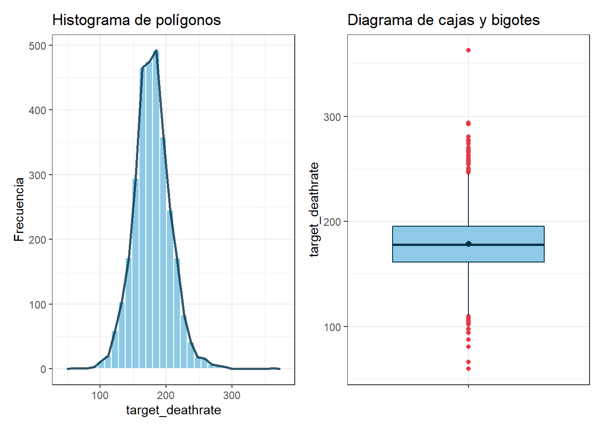
La distribución de target_deathrate presenta una ligera asimetría a la derecha, confirmando lo expuesto por el coeficiente de asimetría positivo. Además, la variable cuenta con un número considerable de valores atípicos tanto en la cola inferior como en la superior, es decir, existen regiones con tasas de muerte muy alejadas de la mayoría, particularmente por encima de 250 y por debajo de 110 aproximadamente.
Por otro lado, la media (178.66) es prácticamente igual a la mediana (178.1), lo cual es consistente con una distribución casi simétrica en su núcleo central, a pesar de la ligera asimetría generada por los valores extremos en la cola derecha. La forma del histograma exhibe un pico marcado alrededor del valor central, lo que respalda la forma leptocúrtica previamente hallada (curtosis = 4.35), indicando una mayor concentración de datos cerca de la media y colas más pesadas que las de una distribución normal.
La presencia simultánea de valores atípicos en ambos extremos sugiere una heterogeneidad importante entre regiones: mientras algunas zonas presentan tasas de mortalidad excepcionalmente bajas (posiblemente asociadas a mejor acceso a salud o detección temprana), otras muestran tasas alarmantemente altas, lo que podría estar vinculado a factores socioeconómicos adversos como pobreza elevada o baja cobertura médica, variables que se explorarán más adelante en el análisis.
1.2 Análisis exploratorio univariado de cada variable explicativa
A continuación, observaremos los resúmenes y gráficos descriptivos de cada una de las variables independientes
1. povertypercent:
## n media d_est mediana RIC Q1 Q3 min max curtosis Coef_asim
## 1 3047 16.87818 6.409087 15.9 8.25 12.15 20.4 3.2 47.4 4.272006 0.9302543Se registraron un total de 3047 registros del porcentaje de pobreza por región (povertypercent), con una tasa media de 16.88% (DE = 6.41). Además, el 50% de los porcentajes de pobreza son menores o iguales a 15.9% (RIC = 8.25), es decir, son muy cercanos a la media, lo que sugiere una distribución relativamente centrada. Por otro lado, el 25% son a lo sumo 12.15%, y el 75% no supera 20.4%. Además, el rango de los datos es de 44.2, siendo el porcentaje mínimo 3.2% y el máximo 47.4%. Por otro lado, se evidencia que los porcentajes de pobreza poseen una forma leptocúrtica (curtosis = 4.27 > 3), es decir, con un pico algo más marcado y colas más pesadas que la normal. Además, los datos presentan una asimetría positiva o sesgo hacia la derecha (Coef_asim = 0.93), con lo cual se observa que existen algunas regiones con niveles de pobreza excesivamente más altos que la mayoría.
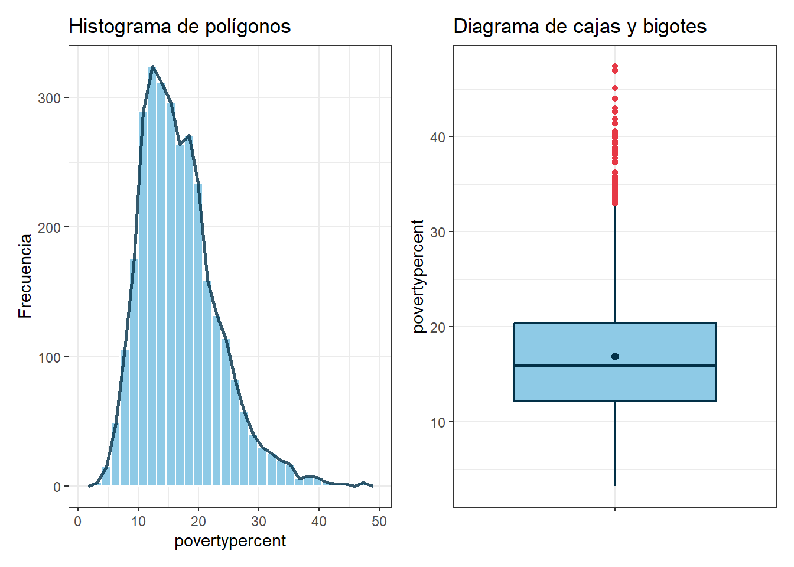
La distribución de povertypercent presenta una asimetría marcada hacia la derecha, confirmando lo expuesto por el coeficiente de asimetría positivo (Coef_asim = 0.93), el cual, al ser considerablemente mayor que 0, indica un sesgo importante en la cola derecha de la distribución. Además, la variable cuenta con un número considerable de valores atípicos, aunque estos se concentran exclusivamente en la cola superior, es decir, existen regiones con porcentajes de pobreza muy alejados de la mayoría, particularmente por encima del 33%, sin presencia de outliers en el extremo inferior.
Por otro lado, la media (16.88%) es cercana a la mediana (15.9%), aunque con una diferencia algo más notoria que en distribuciones simétricas, lo cual es consistente con el sesgo hacia la derecha generado por los valores extremos en la cola superior. La forma del histograma exhibe un pico marcado en valores bajos-moderados de pobreza, lo que respalda la forma leptocúrtica previamente hallada (curtosis = 4.27 > 3), indicando una mayor concentración de datos en niveles moderados de pobreza y una cola derecha más pesada que la de una distribución normal.
La presencia de valores atípicos exclusivamente en la cola superior sugiere que, si bien la mayoría de las regiones presenta niveles de pobreza moderados, existe un subconjunto de regiones con condiciones de pobreza considerablemente más severas que el resto, lo cual podría estar asociado a menor acceso a educación, empleo o cobertura médica, variables que se explorarán más adelante en el análisis.
2. medincome:
## n media d_est mediana RIC Q1 Q3 min max curtosis Coef_asim
## 1 3047 47063.28 12040.09 45207 13609.5 38882.5 52492 22640 125635 6.705259 1.407377Se registraron un total de 3047 registros del ingreso medio por región (medincome), con una tasa media de 46.67 mil (asumiendo unidad en miles; ajustar si es en dólares) (DE = 12040.09). Además, el 50% de los ingresos son menores o iguales a 45207 (RIC = 13609.5), es decir, relativamente cercanos a la media, lo que sugiere una distribución moderadamente centrada. Por otro lado, el 25% son a lo sumo 38882.5, y el 75% no supera 52492. Además, el rango de los datos es de 102995, siendo el ingreso mínimo 22640 y el máximo 125635. Por otro lado, se evidencia que los ingresos poseen una forma marcadamente leptocúrtica (curtosis = 6.71 > 3), es decir, con un pico bastante más marcado y colas mucho más pesadas que la normal. Además, los datos presentan una asimetría positiva pronunciada o sesgo hacia la derecha (Coef_asim = 1.41), con lo cual se observa que existen algunas regiones con ingresos excesivamente más altos que la mayoría.
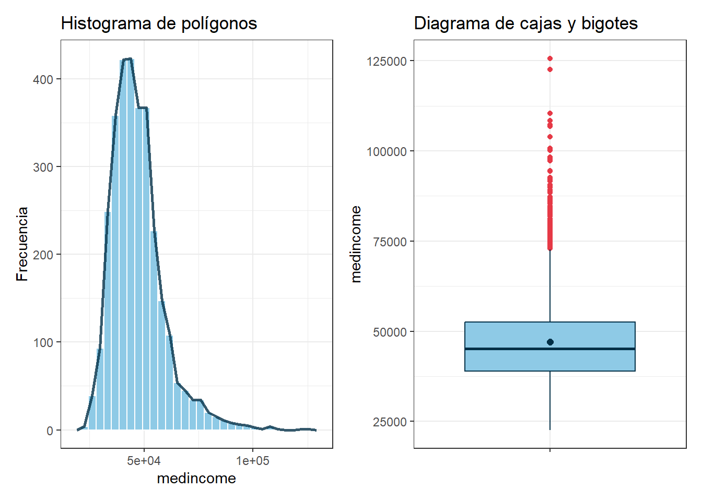
El histograma de medincome muestra una distribución claramente unimodal con un sesgo pronunciado hacia la derecha, concentrando la mayoría de las observaciones entre 35000 y 55000 aproximadamente. El diagrama de cajas y bigotes confirma esta asimetría, evidenciando un número considerable de valores atípicos por encima del bigote superior (regiones con ingresos superiores a 75000, llegando hasta cerca de 125000), sin presencia de outliers en la cola inferior. Esta concentración de valores extremos únicamente en la parte superior es consistente con el elevado coeficiente de asimetría (1.41) y la fuerte curtosis (6.71), sugiriendo que, si bien la mayoría de las regiones presenta ingresos moderados, existe un subconjunto reducido de regiones con niveles de ingreso considerablemente más altos que el resto.
3. pctbachdeg25_over:
## n media d_est mediana RIC Q1 Q3 min max curtosis Coef_asim
## 1 3047 13.28202 5.394756 12.3 6.7 9.4 16.1 2.5 42.2 4.73255 1.094298Se registraron un total de 3047 registros del porcentaje de personas con título universitario entre 25 y más años (pctbachdeg25_over), con una tasa media de 13.28% (DE = 5.39). Además, el 50% de los porcentajes son menores o iguales a 12.3% (RIC = 6.7), es decir, son cercanos a la media, lo que sugiere una distribución relativamente centrada. Por otro lado, el 25% son a lo sumo 9.4%, y el 75% no supera 16.1%. Además, el rango de los datos es de 39.7, siendo el porcentaje mínimo 2.5% y el máximo 42.2%. Por otro lado, se evidencia que los porcentajes de personas con título universitario poseen una forma leptocúrtica (curtosis = 4.73 > 3), es decir, con un pico algo más marcado y colas más pesadas que la normal. Además, los datos presentan una asimetría positiva o sesgo hacia la derecha bastante marcado (Coef_asim = 1.09), con lo cual se observa que existen algunas regiones con porcentajes de personas con título universitario excesivamente más altos que la mayoría.
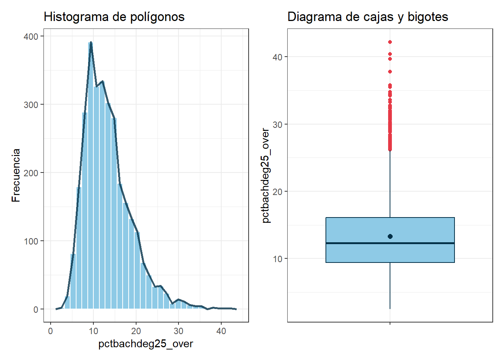
El histograma de pctbachdeg25_over muestra una distribución unimodal con un sesgo pronunciado hacia la derecha, concentrando la mayoría de las observaciones entre 8% y 18% aproximadamente. El diagrama de cajas y bigotes confirma esta asimetría, evidenciando un número considerable de valores atípicos por encima del bigote superior (regiones con porcentajes de título universitario superiores a 26%, llegando hasta cerca de 42%), sin presencia de outliers en la cola inferior. Esta concentración de valores extremos únicamente en la parte superior es consistente con el elevado coeficiente de asimetría (1.09) y la marcada curtosis (4.73), sugiriendo que, si bien la mayoría de las regiones presenta niveles moderados de formación universitaria, existe un subconjunto de regiones con porcentajes considerablemente más altos que el resto.
4. pctprivatecoverage:
## n media d_est mediana RIC Q1 Q3 min max curtosis Coef_asim
## 1 3047 64.35494 10.64706 65.1 14.9 57.2 72.1 22.3 92.3 2.994335 -0.3933435Se registraron un total de 3047 registros del porcentaje de cobertura de seguro privado (pctprivatecoverage), con una tasa media de 64.35% (DE = 10.65). Además, el 50% de los porcentajes son menores o iguales a 65.1% (RIC = 14.9), es decir, muy cercanos a la media, lo que sugiere una distribución relativamente centrada. Por otro lado, el 25% son a lo sumo 57.2%, y el 75% no supera 72.1%. Además, el rango de los datos es de 70, siendo el porcentaje mínimo 22.3% y el máximo 92.3%. Por otro lado, se evidencia que los porcentajes de cobertura privada poseen una forma prácticamente mesocúrtica (curtosis = 2.99 ≈ 3), es decir, con un pico y colas similares a los de una distribución normal. Además, los datos presentan una ligera asimetría negativa o sesgo hacia la izquierda (Coef_asim = -0.39), con lo cual se observa que existen algunas regiones con porcentajes de cobertura privada notablemente más bajos que la mayoría.
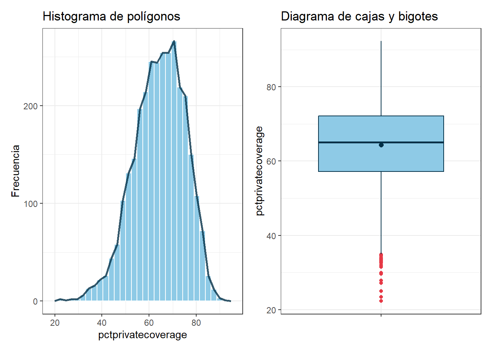
El histograma de pctprivatecoverage muestra una distribución razonablemente simétrica, con un ligero sesgo hacia la izquierda, concentrando la mayoría de las observaciones entre 55% y 75%. El diagrama de cajas y bigotes confirma este comportamiento, evidenciando la presencia de valores atípicos únicamente en la cola inferior (regiones con coberturas privadas por debajo de 35%, llegando hasta cerca de 22%), sin outliers en el extremo superior. Esta asimetría leve hacia la izquierda, junto con una curtosis cercana a 3, es consistente con una distribución cercana a la normalidad, salvo por la presencia de algunas regiones con niveles de cobertura privada considerablemente más bajos que el resto.
5. pctpubliccoverage:
## n media d_est mediana RIC Q1 Q3 min max curtosis Coef_asim
## 1 3047 36.25264 7.841741 36.3 10.65 30.9 41.55 11.2 65.1 2.908984 -0.005432924Se registraron un total de 3047 registros del porcentaje de cobertura de seguro público (pctpubliccoverage), con una tasa media de 36.25% (DE = 7.84). Además, el 50% de los porcentajes son menores o iguales a 36.3% (RIC = 10.65), lo cual es prácticamente idéntico a la media, sugiriendo una distribución muy simétrica y centrada. Por otro lado, el 25% son a lo sumo 30.9%, y el 75% no supera 41.55%. Además, el rango de los datos es de 53.9, siendo el porcentaje mínimo 11.2% y el máximo 65.1%. Por otro lado, se evidencia que los porcentajes de cobertura pública poseen una forma prácticamente mesocúrtica (curtosis = 2.91 ≈ 3), es decir, con un pico y colas muy similares a los de una distribución normal. Además, los datos presentan una asimetría prácticamente nula (Coef_asim = -0.005), con lo cual se observa que la distribución es esencialmente simétrica.
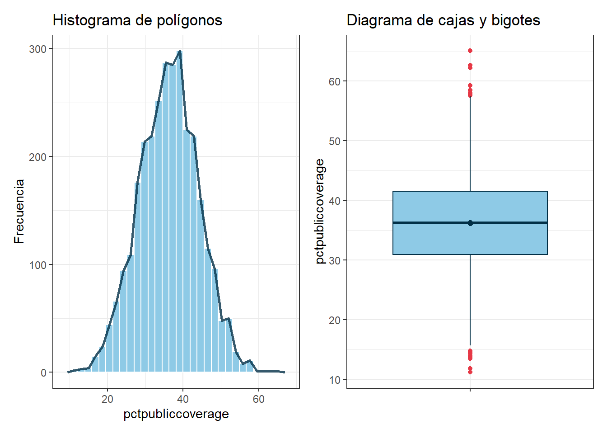
El histograma de pctpubliccoverage muestra una distribución bastante simétrica y cercana a la forma normal, concentrando la mayoría de las observaciones entre 30% y 42%. El diagrama de cajas y bigotes confirma esta simetría, evidenciando valores atípicos tanto en la cola inferior como en la superior, aunque en cantidad reducida (regiones con coberturas públicas por debajo de 15% o por encima de 57%). La coincidencia entre media y mediana, junto con un coeficiente de asimetría prácticamente nulo y una curtosis cercana a 3, respalda que esta variable se ajusta razonablemente bien a una distribución normal, con solo algunas regiones que se alejan del comportamiento típico en ambos extremos.
6. pctunemployed16_over:
## n media d_est mediana RIC Q1 Q3 min max curtosis Coef_asim
## 1 3047 7.852412 3.452371 7.6 4.2 5.5 9.7 0.4 29.4 5.291033 0.8906224Se registraron un total de 3047 registros del porcentaje de desempleo en personas mayores de 16 años (pctunemployed16_over), con una tasa media de 7.85% (DE = 3.45). Además, el 50% de los porcentajes son menores o iguales a 7.6% (RIC = 4.2), es decir, cercanos a la media, lo que sugiere una distribución relativamente centrada. Por otro lado, el 25% son a lo sumo 5.5%, y el 75% no supera 9.7%. Además, el rango de los datos es de 29, siendo el porcentaje mínimo 0.4% y el máximo 29.4%. Por otro lado, se evidencia que los porcentajes de desempleo poseen una forma leptocúrtica (curtosis = 5.29 > 3), es decir, con un pico algo más marcado y colas más pesadas que la normal. Además, los datos presentan una asimetría positiva o sesgo hacia la derecha (Coef_asim = 0.89), con lo cual se observa que existen algunas regiones con tasas de desempleo excesivamente más altas que la mayoría.
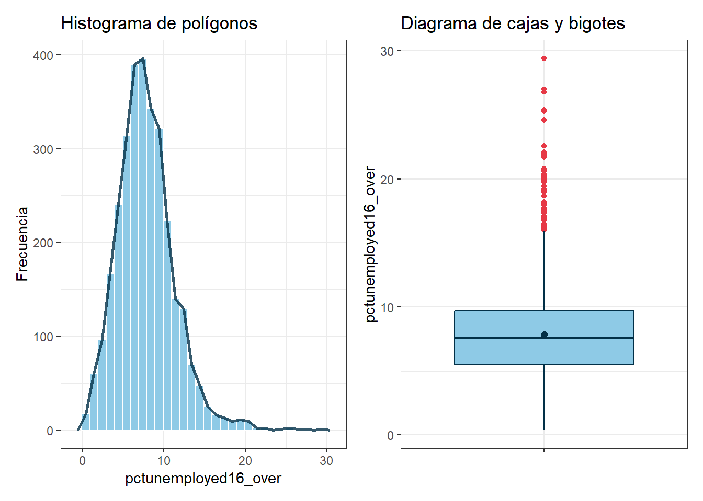
El histograma de pctunemployed16_over muestra una distribución unimodal con un sesgo notorio hacia la derecha, concentrando la mayoría de las observaciones entre 4% y 12%. El diagrama de cajas y bigotes confirma esta asimetría, evidenciando un número considerable de valores atípicos por encima del bigote superior (regiones con tasas de desempleo superiores a 16%, llegando hasta cerca de 29%), sin presencia de outliers en la cola inferior. Esta concentración de valores extremos únicamente en la parte superior es consistente con el coeficiente de asimetría positivo (0.89) y la marcada curtosis (5.29), sugiriendo que, si bien la mayoría de las regiones presenta tasas de desempleo moderadas, existe un subconjunto de regiones con niveles de desempleo considerablemente más altos que el resto.
1.3 Análisis exploratorio univariado de la variable categórica binnedinc
df %>%
count(binnedinc, name = "frecuencia") %>%
mutate(frecuecia_porcentual = round(100 * frecuencia / sum(frecuencia), 2))## binnedinc frecuencia frecuecia_porcentual
## 1 [22640, 34218.1] 306 10.04
## 2 (34218.1, 37413.8] 304 9.98
## 3 (37413.8, 40362.7] 304 9.98
## 4 (40362.7, 42724.4] 304 9.98
## 5 (42724.4, 45201] 305 10.01
## 6 (45201, 48021.6] 306 10.04
## 7 (48021.6, 51046.4] 305 10.01
## 8 (51046.4, 54545.6] 305 10.01
## 9 (54545.6, 61494.5] 306 10.04
## 10 (61494.5, 125635] 302 9.91La tabla de frecuencias de binnedinc confirma que la variable se
distribuye de forma casi perfectamente equitativa entre sus 10 categorías,
con frecuencias que oscilan entre 302 y 306 observaciones por grupo (entre
9.91% y 10.04% del total). Esto es consistente con la naturaleza de la
variable, ya que al estar construida a partir de deciles del ingreso medio
(medincome), cada categoría fue diseñada para contener aproximadamente
el mismo número de regiones. No se observan categorías con representación
insuficiente o desbalanceada, lo cual es favorable de cara a la prueba de
independencia Chi-cuadrado que se realizará más adelante entre esta
variable y la categorización de target_deathrate.
df %>%
ggplot(aes(x = binnedinc)) +
geom_bar(fill = "#8ecae6", color = "#023047") +
geom_text(stat = "count", aes(label = after_stat(count)), vjust = -0.5) +
labs(title = "Distribución de binnedinc",
x = "Rango de ingreso medio (binnedinc)", y = "Frecuencia") +
scale_y_continuous(limits = c(0, 330)) +
theme_bw() +
theme(
axis.text.x = element_text(angle = 45, hjust = 1),
plot.title = element_text(margin = margin(b = 15))
) El gráfico de barras confirma visualmente lo observado en la tabla de
frecuencias: las diez categorías de
El gráfico de barras confirma visualmente lo observado en la tabla de
frecuencias: las diez categorías de binnedinc presentan alturas
prácticamente idénticas entre sí, reflejando una distribución uniforme de
las regiones a lo largo de los distintos rangos de ingreso medio. Esta
homogeneidad en el tamaño de los grupos es una característica deseable
para la prueba de independencia Chi-cuadrado que se aplicará más adelante,
ya que evita que alguna categoría tenga una representación insuficiente
que pudiera comprometer la validez de dicha prueba.
1.4 Análisis exploratorio bivariado entre la variable dependiente y las variables independientes
Función para visualizar el gráfico de dispersión de un par de variables numéricas
plot_dispersion_respuesta <- function(df, var, var_label) {
df %>%
ggplot(aes(x = {{ var }}, y = target_deathrate)) +
geom_point(alpha = 0.4, color = "#1E90FF") +
labs(
x = var_label,
y = "Tasa de mortalidad por cáncer (por cada 100.000 hab.)"
) +
theme_bw() +
facet_grid(. ~ paste("Dispersión entre", var_label, "y la tasa de mortalidad"))
}Seguidamente, se observará cada uno de los gráficos de dispersión entre la variable dependiente target_deathrate y cada una de las variables numéricas independientes
povertypercent vs target_deathrate:
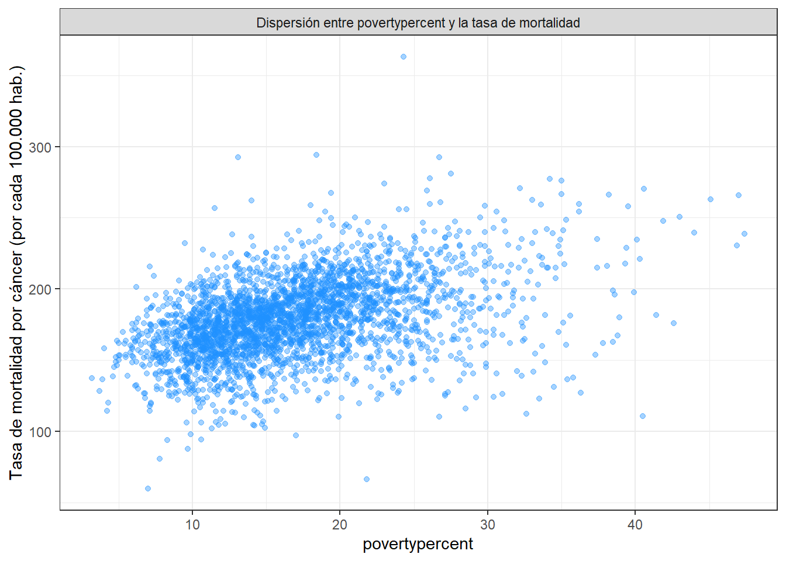
El diagrama de dispersión entrepovertypercent y target_deathrate muestra una relación positiva pero moderada: a mayor porcentaje de pobreza, se observa una ligera tendencia al aumento en la tasa de mortalidad por cáncer. La mayoría de las observaciones se concentra entre 10% y 20% de pobreza, con tasas de mortalidad principalmente entre 150 y 220 muertes por cada 100,000 habitantes. Además, la dispersión vertical aumenta notablemente en niveles altos de pobreza (superiores a 30%), donde las tasas de mortalidad llegan a superar las 250 muertes por cada 100,000 habitantes en varios casos, sugiriendo que otros factores como el acceso a cobertura médica podrían estar influyendo con mayor peso en esas regiones. También se identifica un valor atípico notable alrededor del 25% de pobreza con una tasa cercana a 360, muy por encima del comportamiento general. En conjunto, la relación positiva entre ambas variables no parece lo suficientemente fuerte como para explicar por sí sola la variabilidad de target_deathrate, lo que anticipa la necesidad de un modelo de regresión múltiple que incorpore variables adicionales para capturar de forma más completa los determinantes de la mortalidad por cáncer.
medincome vs target_deathrate:
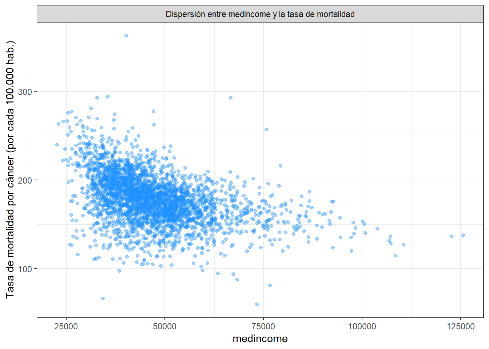
El diagrama de dispersión entre medincome y target_deathrate muestra una relación negativa moderada: a mayor ingreso medio, se observa una tendencia a la disminución en la tasa de mortalidad por cáncer, siendo esta la relación más clara identificada hasta el momento. La mayoría de las observaciones se concentra entre 25000 y 75000 de ingreso, con tasas de mortalidad principalmente entre 150 y 220 muertes por cada 100,000 habitantes. Además, la dispersión vertical es notablemente mayor en niveles bajos de ingreso (por debajo de 40000), donde las tasas llegan a superar las 280 muertes por cada 100,000 habitantes en varios casos, mientras que en niveles altos de ingreso (superiores a 75000) la nube se estrecha considerablemente y las tasas rara vez superan las 180 muertes, sugiriendo un efecto protector más consistente del ingreso a medida que este aumenta. También se identifica el mismo valor atípico notable alrededor de los 35000 de ingreso con una tasa cercana a 360, muy por encima del comportamiento general. En conjunto, esta relación negativa parece ser una de las más fuertes entre las variables exploradas hasta ahora, aunque persiste una dispersión considerable que anticipa la necesidad de un modelo de regresión múltiple para capturar de forma más completa los determinantes de la mortalidad por cáncer.
pctbachdeg25_over vs target_deathrate:
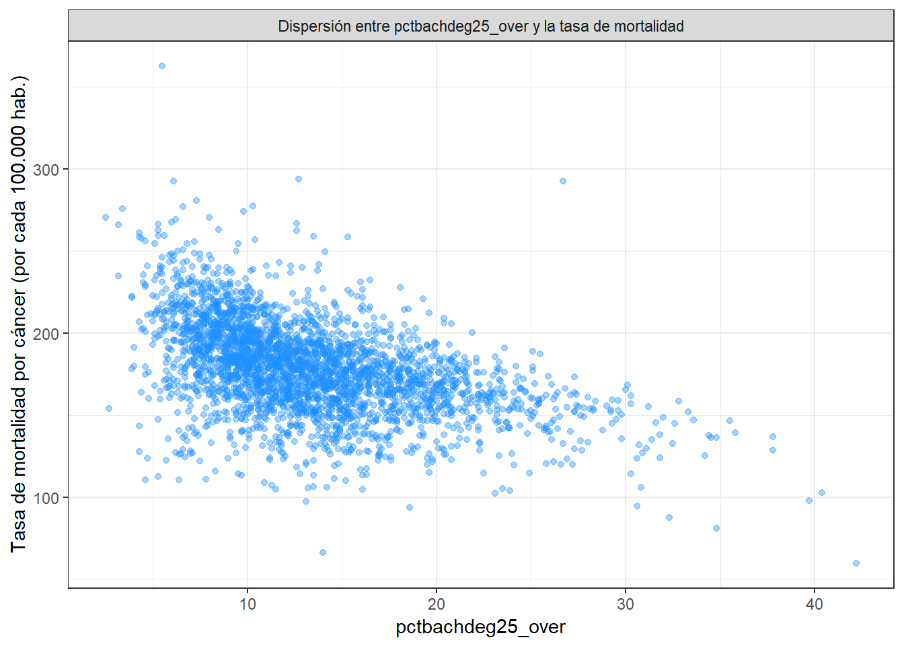
El diagrama de dispersión entre pctbachdeg25_over y target_deathrate muestra una relación negativa moderada: a mayor porcentaje de personas con título universitario, se observa una tendencia a la disminución en la tasa de mortalidad por cáncer. La mayoría de las observaciones se concentra entre 8% y 20% de formación universitaria, con tasas de mortalidad principalmente entre 150 y 220 muertes por cada 100,000 habitantes. Además, la dispersión vertical es mayor en niveles bajos de formación universitaria (por debajo de 10%), donde las tasas llegan a superar las 270 muertes por cada 100,000 habitantes en varios casos, mientras que en niveles altos (superiores a 30%) la nube se estrecha y las tasas tienden a ubicarse por debajo de 150, sugiriendo que un mayor nivel educativo podría asociarse con mejores desenlaces frente al cáncer. También se identifica el mismo valor atípico notable alrededor del 6% con una tasa cercana a 360, muy por encima del comportamiento general. En conjunto, la relación negativa entre ambas variables refuerza la idea de que los factores socioeconómicos, en este caso la educación, están relacionados con la mortalidad por cáncer, aunque nuevamente la dispersión presente anticipa la necesidad de un modelo de regresión múltiple que incorpore variables adicionales.
pctprivatecoverage vs target_deathrate:
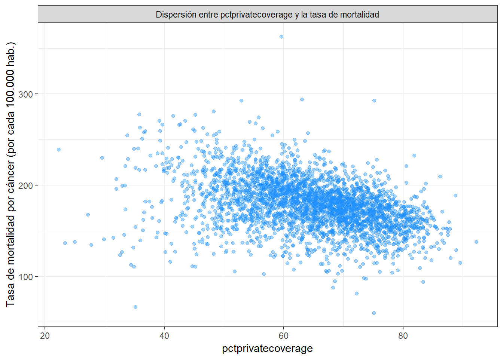
El diagrama de dispersión entre pctprivatecoverage y target_deathrate muestra una relación negativa moderada: a mayor porcentaje de cobertura de seguro privado, se observa una tendencia clara a la disminución en la tasa de mortalidad por cáncer. La mayoría de las observaciones se concentra entre 50% y 80% de cobertura privada, con tasas de mortalidad principalmente entre 150 y 210 muertes por cada 100,000 habitantes, formando una nube densa y relativamente estrecha en ese rango. Además, la dispersión vertical es notablemente mayor en niveles bajos de cobertura privada (por debajo de 45%), donde las tasas alcanzan valores entre 200 y 280 muertes por cada 100,000 habitantes con mayor frecuencia, mientras que en niveles altos (superiores a 75%) la nube se desplaza y se comprime hacia tasas más bajas, rara vez superando las 200 muertes, lo que sugiere que una mayor cobertura privada está asociada de forma consistente con menores tasas de mortalidad. También se identifica el mismo valor atípico notable alrededor del 60% de cobertura con una tasa cercana a 360, muy por encima del comportamiento general. En conjunto, esta relación negativa moderada es coherente con el patrón inverso observado en pctpubliccoverage, reforzando la hipótesis de que el tipo de cobertura médica está vinculado al nivel socioeconómico y, por extensión, a la mortalidad por cáncer, aunque la dispersión remanente anticipa la necesidad de un modelo de regresión múltiple para capturar el efecto conjunto de todas las variables.
pctpubliccoverage vs target_deathrate:
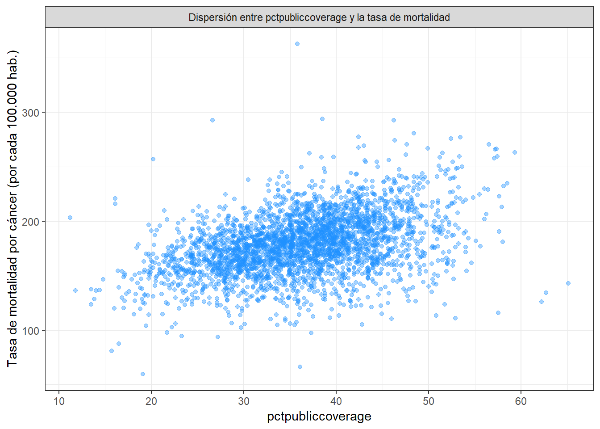
El diagrama de dispersión entre pctpubliccoverage y target_deathrate muestra una relación positiva moderada: a mayor porcentaje de cobertura de seguro público, se observa una tendencia al aumento en la tasa de mortalidad por cáncer, comportamiento opuesto al identificado con la cobertura privada. La mayoría de las observaciones se concentra entre 25% y 50% de cobertura pública, con tasas de mortalidad principalmente entre 150 y 220 muertes por cada 100,000 habitantes. Además, la dispersión vertical aumenta en niveles altos de cobertura pública (superiores a 45%), donde varias regiones alcanzan tasas por encima de 250 muertes por cada 100,000 habitantes, lo que podría estar asociado a que una mayor dependencia de la cobertura pública refleja, de forma indirecta, condiciones socioeconómicas más desfavorables. También se identifica el mismo valor atípico notable alrededor del 30% de cobertura con una tasa cercana a 360, muy por encima del comportamiento general. En conjunto, esta relación positiva es consistente con lo hallado en povertypercent y pctunemployed16_over, reforzando la hipótesis de que la desventaja socioeconómica está asociada a una mayor mortalidad por cáncer, aunque la relación no es lo suficientemente fuerte como para prescindir de un modelo de regresión múltiple.
pctunemployed16_over vs target_deathrate:
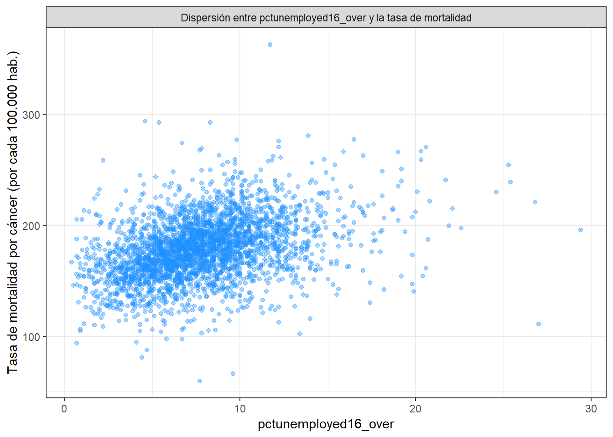
El diagrama de dispersión entre pctunemployed16_over y target_deathrate muestra una relación positiva moderada: a mayor tasa de desempleo, se observa una tendencia al aumento en la tasa de mortalidad por cáncer. La mayoría de las observaciones se concentra entre 4% y 12% de desempleo, con tasas de mortalidad principalmente entre 150 y 220 muertes por cada 100,000 habitantes. Además, la dispersión vertical aumenta en niveles altos de desempleo (superiores a 15%), donde varias regiones presentan tasas cercanas o superiores a 250 muertes por cada 100,000 habitantes, aunque también se observan algunos casos con tasas bajas en niveles altos de desempleo (como el valor cercano a 110 muertes con desempleo superior a 25%), lo que introduce cierta inconsistencia en la tendencia general. También se identifica el mismo valor atípico notable alrededor del 12% de desempleo con una tasa cercana a 360, muy por encima del comportamiento general. En conjunto, la relación positiva entre ambas variables es consistente con el patrón observado en povertypercent y pctpubliccoverage, sugiriendo que las condiciones adversas del mercado laboral podrían estar vinculadas a una mayor mortalidad por cáncer, aunque, al igual que en los casos anteriores, esta relación por sí sola no es suficiente para explicar la variabilidad completa de target_deathrate, lo que anticipa la necesidad de un modelo de regresión múltiple.
Ahora veamos la relación entre la variable objetivo target_deathrate y la variable categórica binnedinc.
Función para observar el gráfico de cajas y bigotes correspondiente a una variable numérica por cada uno de los grupos de la variable categórica binnedinc
plot_binnedinc_vs <- function(df, var, var_label) {
df %>%
ggplot(aes(x = binnedinc, y = {{ var }})) +
geom_boxplot(fill = "#8ecae6", color = "#023047", outlier.color = "#e63946") +
stat_summary(fun = mean, geom = 'point', shape = 20, size = 3, color = '#023047') +
labs(title = paste(var_label, "por rango de ingreso medio"),
x = "Rango de ingreso medio (binnedinc)",
y = var_label) +
theme_bw() +
theme(axis.text.x = element_text(angle = 45, hjust = 1))
}Ahora llamando dicha función con la variable dependiente target_deathrate
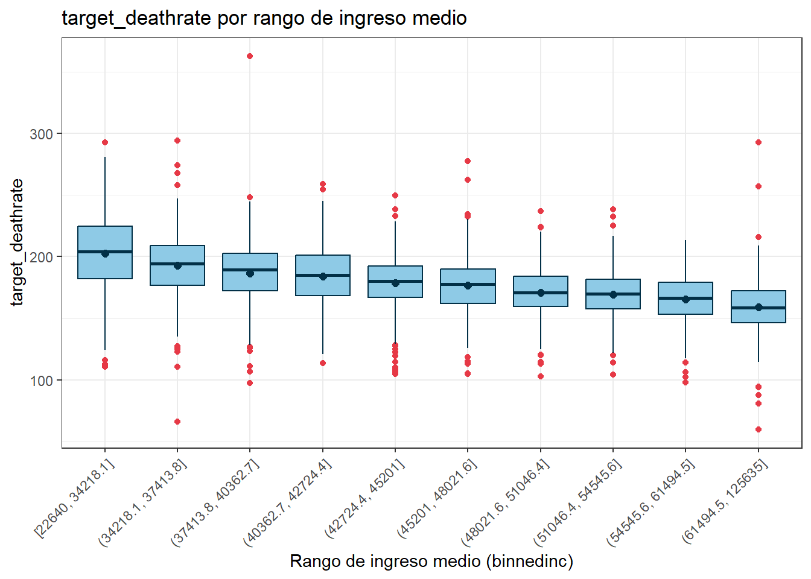
El diagrama de cajas y bigotes muestra un patrón descendente claro y consistente: a medida que aumenta el rango de ingreso medio (binnedinc),
la tasa de mortalidad por cáncer disminuye de forma progresiva. El primer
grupo, con los ingresos más bajos ([22640, 34218.1]), presenta la mediana
más alta (cercana a 205), mientras que el último grupo, con los ingresos
más altos ((61494.5, 125635]), presenta la mediana más baja (cercana a
160), lo que indica que existe una diferencia de aproximadamente 45 muertes
por cada 100,000 habitantes entre los extremos del espectro de ingreso.
La dispersión también parece disminuir levemente a medida que aumenta el ingreso: los grupos de menor ingreso muestran cajas ligeramente más amplias, mientras que los de mayor ingreso presentan una distribución algo más compacta. Además, todos los grupos exhiben una cantidad considerable de valores atípicos en ambos extremos.
Este comportamiento gradual y monótono a lo largo de las diez categorías sugiere que el ingreso medio de una región está asociado de forma negativa con su tasa de mortalidad por cáncer.
1.5 Análisis exploratorio bivariado de las variables independientes entre sí
variables_bivariado <- c(
"povertypercent",
"medincome",
"pctbachdeg25_over",
"pctprivatecoverage",
"pctpubliccoverage",
"pctunemployed16_over"
)
df_bivariado <- df %>%
select(all_of(variables_bivariado))grafico_dispersion <- function(datos, variable_x, variable_y) {
datos %>%
ggplot(aes(x = .data[[variable_x]], y = .data[[variable_y]])) +
geom_point(alpha = 0.6, color = "darkblue") +
labs(
title = paste(variable_y, "vs", variable_x),
x = variable_x,
y = variable_y
) +
theme_bw()
}Porcentaje de Pobreza vs Ingreso Medio
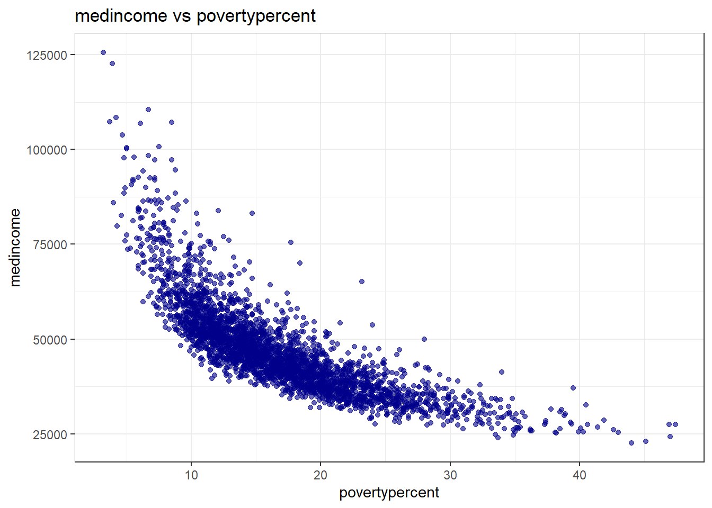
Los puntos muestran una tendencia descendente clara, mientras aumenta elPorcentaje de Pobreza disminuye el Ingreso Medio. Podemos notar que la mayoría de condados se concentran entre los porcentajes de probreza de 8% y 22%, con gran parte de los valores de estas zonas por debajo de los 60000 USD de ingreso medio.
Asimismo, podemos notar como la dispersión se mantiene bastante concentrada, la variabilidad de los ingresos aumenta considerablemente cuando el porcentaje de pobreza alcanza porcentajes por debajo de 8% o cuando el ingreso medio llega a valores por debajo de los 27000 USD aumenta la variabilidad del porcentaje de pobreza.
En general, la relación es negativa, siendo curva, y notablemente fuerte dentro de este dataset, permitiendo ver como el porcentaje de pobreza está directamente relacionado con los ingresos.
Porcentaje de Pobreza vs Porcentaje de Personas mayores a 25 años con Título Universitario
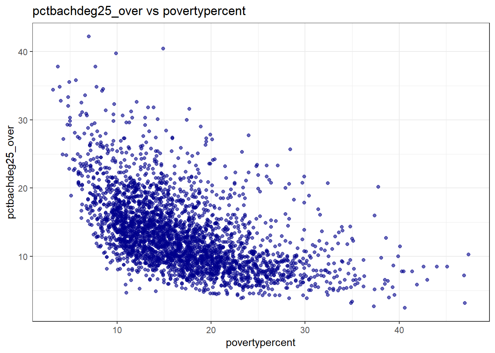
Los puntos muestran una tendencia descendente moderada, mientras aumenta elPorcentaje de Pobreza disminuye el Porcentaje de Personas mayores a 25 años con Título Universitario. Se evidencia como los datos de los condados están concentrados entre los porcentajes de probreza de 10% y 20%, con dicha concentración de zonas por debajo del 16% de personas con título y mayores a 25 años.
Este gráfico contiene un gran nivel de dispersión el cual se hace notar con la gran cantidad de outliers que está gráfica maneja, llegando hasta porcentajes de 42.2% de personas mayores a 25 años con título, lo cual nos muestra que en ningún condado de Estados Unidos el porcentaje de personas “educadas”, a través de la Universidad, es la mayoría de personas del condado. De igual manera, en el porcentaje de pobreza hay valores que llegan hasta el 47.4%.
En general, la relación es negativa, siendo ligeramente curva, y fuerte, clarificando la ligera relación entre el porcentaje de pobreza y el porcentaje de personas mayores a 25 con título universitario. Evidenciando como el ser personas “educadas” si se relaciona moderadamente con el porcentaje de pobreza.
Porcentaje de Pobreza vs Porcentaje con Cobertura Privada
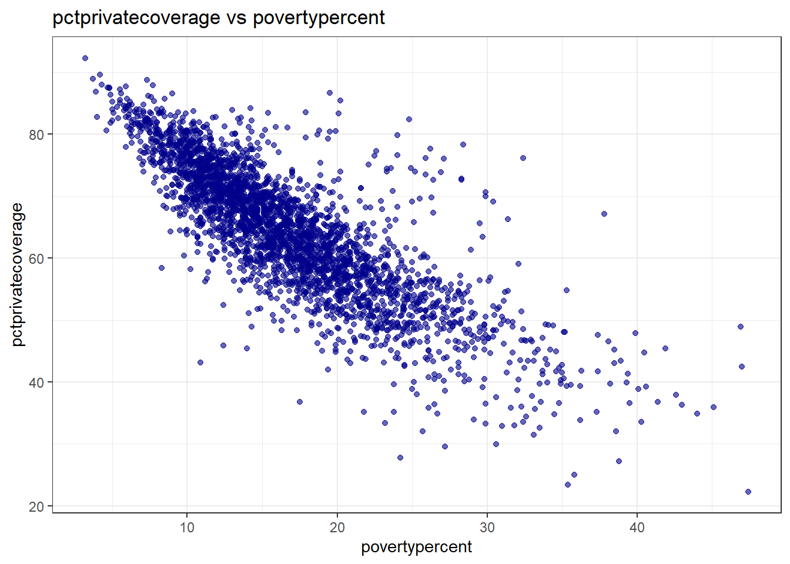
Los puntos muestran una tendencia descendente clara, mientras aumenta elPorcentaje de Pobreza disminuye el Porcentaje con Cobertura Privada. La mayoría de condados están concentrados entre 12% y 20% de pobreza, con valores de cobertura privada que rondan entre el 57% y el 72%.
El nivel de dispersión es moderado, puesto que a partir de aproximadamente el 8% de porcentaje de pobreza, comienzan a haber outliers mayores, aunque manteniendo una concentración clara, la cual se sitúa entre el 7% y 20% de pobreza, y el 55% y 80% de condados con seguro médico privado.
En general, la relación es negativa, lineal y muy fuerte, lo que evidencia que el acceso a seguro médico privado está estrechamente ligado al nivel de pobreza de un condado.
Porcentaje de Pobreza vs Porcentaje con Cobertura Pública
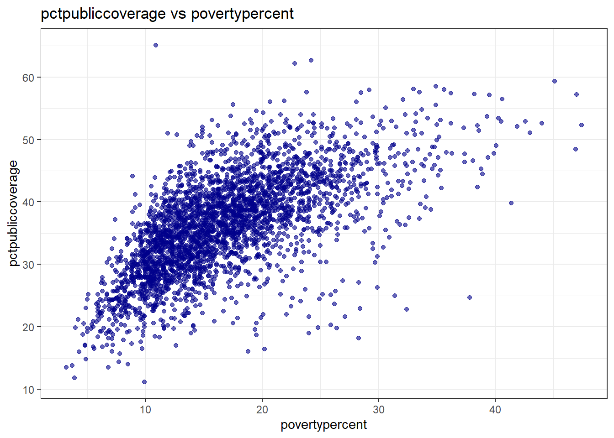
A diferencia del gráfico anterior, aquí la tendencia es ascendente, a mayorPorcentaje de Pobreza, mayor tiende a ser el Porcentaje con Cobertura Pública. Con base en el contexto del problema, a mayor pobreza, más dependencia de programas de salud pública en vez de seguros privados es lógico y razonable.
La mayoría de condados se concentran entre 12% y 20% de pobreza, con cobertura pública entre 31% y 42%.
La relación es positiva, con curvatura moderada, y ligeramente fuerte.
Porcentaje de Pobreza vs Porcentaje de Desempleo
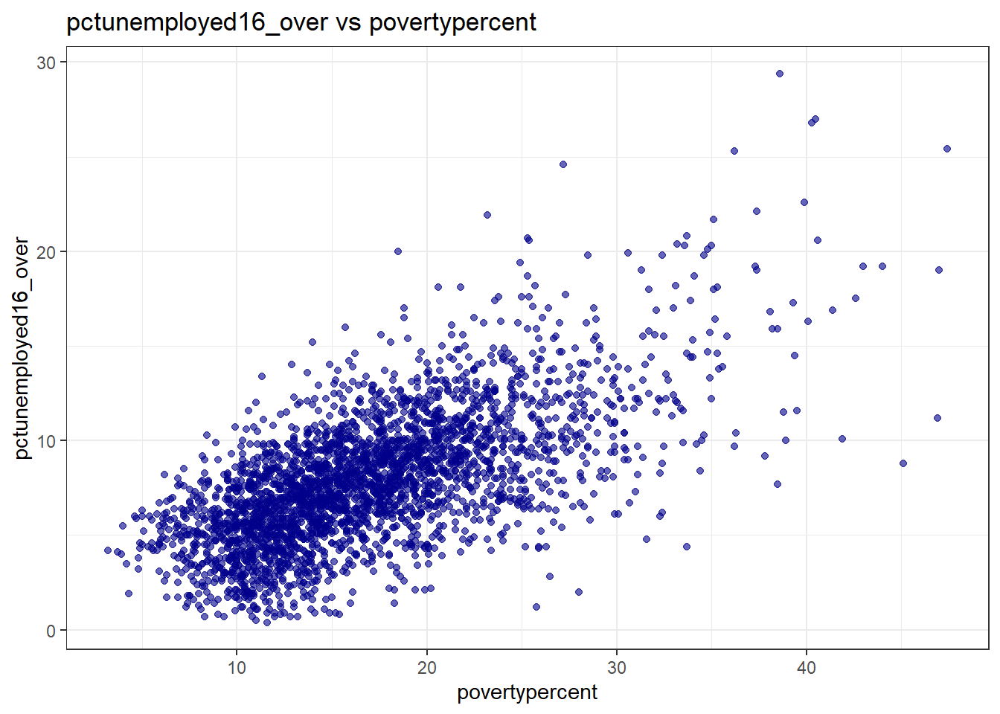
Se observa una tendencia ascendente moderada, a mayor pobreza, mayor desempleo en el condado, siendo esto esperable, ya que ambas variables reflejan dificultades económicas similares. La mayoría de los condados se concentran entre 12% y 20% de pobreza, con tasas de desempleo que se ubican en un rango de entre 5.5% y 9.7%. Existen algunos condados con desempleo notablemente alto, llegando hasta 29.4%, que se alejan del resto de datoa y podrían considerarse datos atípicos. La relación es positiva, de fuerza moderada y lineal con una leve curvatura.Ingreso Medio vs Porcentaje con Título Universitario
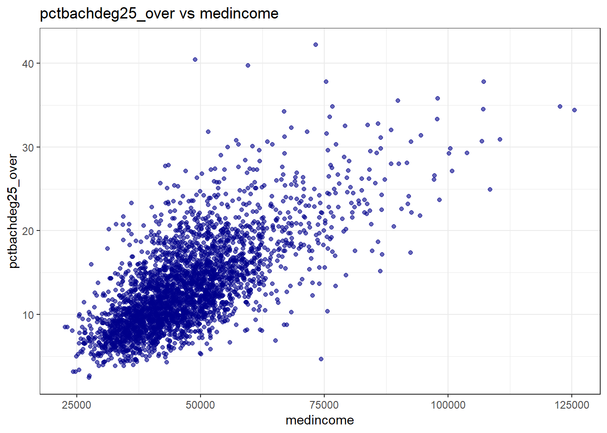
Los puntos muestran una tendencia ascendente evidente, que a mayorIngreso Medio, mayor Porcentaje con Título Universitario. Resultado predecible bajo el contextado dado que más educación suele traducirse en mejores oportunidades laborales e ingresos más altos.
La mayoría de los condados se concentran entre 38,900 y 52,500 USD de ingreso, con porcentajes de título universitario entre 9.4% y 16.1% en esa zona.
La relación es positiva, moderadamente curva, y fuerte.
Ingreso Medio vs Porcentaje con Cobertura Privada
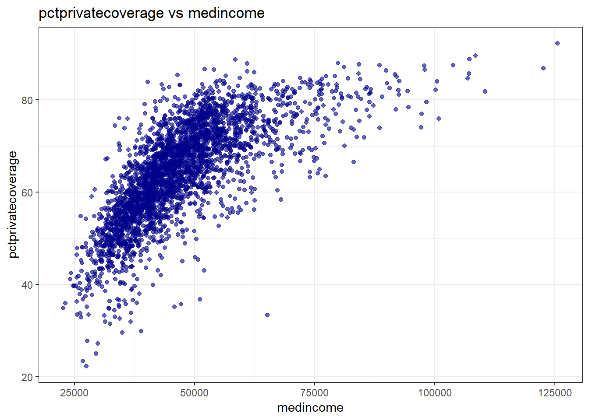
Se observa una tendencia ascendente, a mayorIngreso Medio, mayor Porcentaje con Cobertura Privada. Esto es coherente con la lógica de los seguros privados puesto que suelen depender de la capacidad de pago o de acceder a un empleo formal con beneficios.
La mayoría de condados se concentran entre 38,900 y 52,500 USD de ingreso, con cobertura privada entre 57% y 72%.
La relación es positiva y fuerte, siendo una de las más claras al hablar del ingreso medio.
Ingreso Medio vs Porcentaje con Cobertura Pública
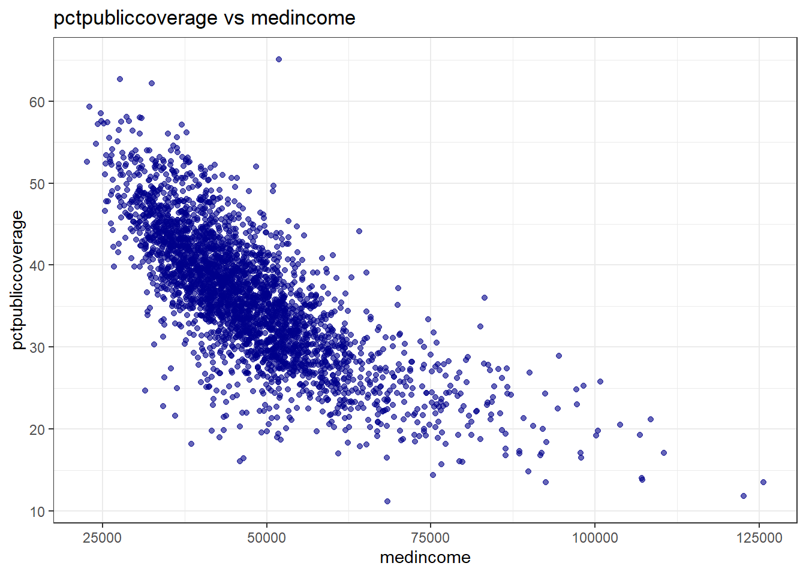
Aquí la tendencia es descendente, conforme aumenta elIngreso Medio, disminuye el Porcentaje con Cobertura Pública, siendo consistente con el hecho de que a mayor capacidad económica, menor dependencia de programas de salud pública.
La concentración de los datos se encuentra 28000 USD y los 55000 USD de ingreso medio, junto a un rango de entre 27% y 48% de cobertura pública.
La relación es negativa y fuerte, la más fuerte entre todas las comparaciones de medincome con las variables de cobertura de salud.
Ingreso Medio vs Porcentaje de Desempleo
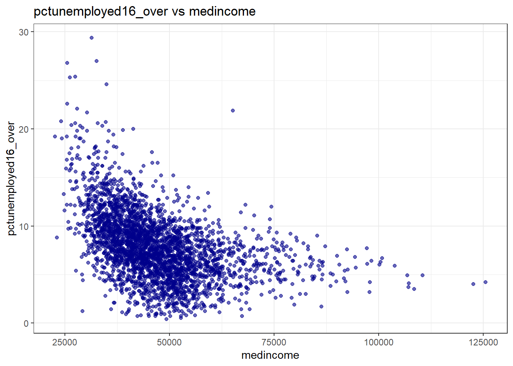
Se observa una tendencia descendente, no obstante con una dispersión mayor a lo usual dentro de este dataset, a mayorIngreso Medio, tiende a disminuir el Porcentaje de Desempleo.
En este sentido, la distribución de los datos está mucho más esparcida, sin embargo, podemos notar cierto nivel de concentración dentro de la zona de ingresos bajos-medios.
La relación es negativa y con un nivel de fuerza moderada, debido a que más allá de la concentración de datos, el resto de la distribución pese a seguir esta relación, es con datos más atípicos que normales.
Porcentaje con Título Universitario vs Porcentaje con Cobertura Privada
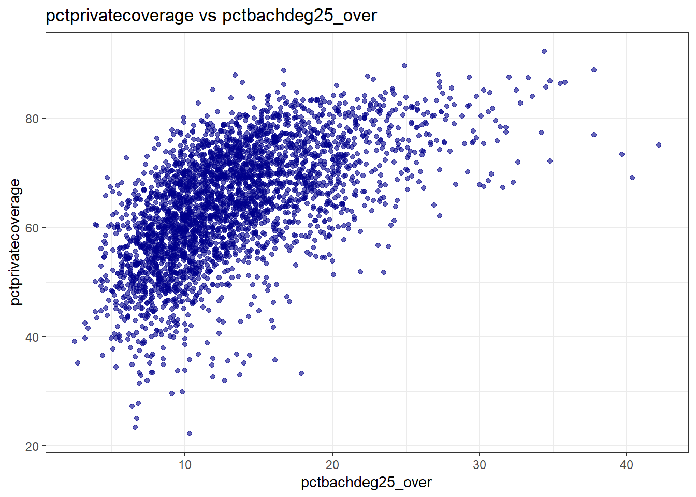
Los puntos muestran una tendencia ascendente moderada, a mayorPorcentaje con Título Universitario, mayor Porcentaje con Cobertura Privada. La mayoría de los condados se concentran entre 9.4% y 16.1% de título universitario, con cobertura privada entre 57% y 72%.
Podemos observar como tiene una distribución la cual está un poco esparcida pero se desarrolla principalmente por arriba del 50% de cobertura privada.
La relación es positiva, con una curvatura medianamente notable y con una fuerza moderada.
Porcentaje con Título Universitario vs Porcentaje con Cobertura Pública
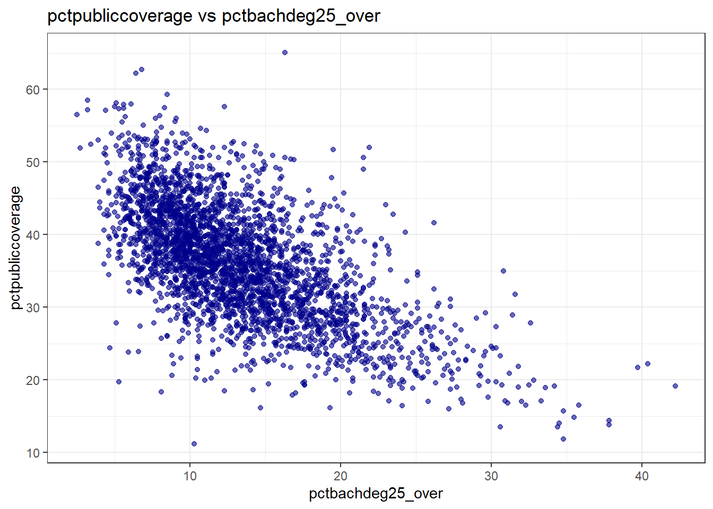
Se observa una tendencia descendente moderada, a mayorPorcentaje con Título Universitario, menor Porcentaje con Cobertura Pública, como en casos anteriores, siendo consistente dado que con mayor educación se asocia con mejores condiciones económicas y menor dependencia de programas públicos de salud.
Seguidamente, podemos notar que la concentración de los datos se da dentro de niveles medio-bajo del porcentaje con título universitario, lo cual implica y confirma lo antes mencionado.
La relación es negativa y de fuerza moderada.
Porcentaje con Título Universitario vs Porcentaje de Desempleo
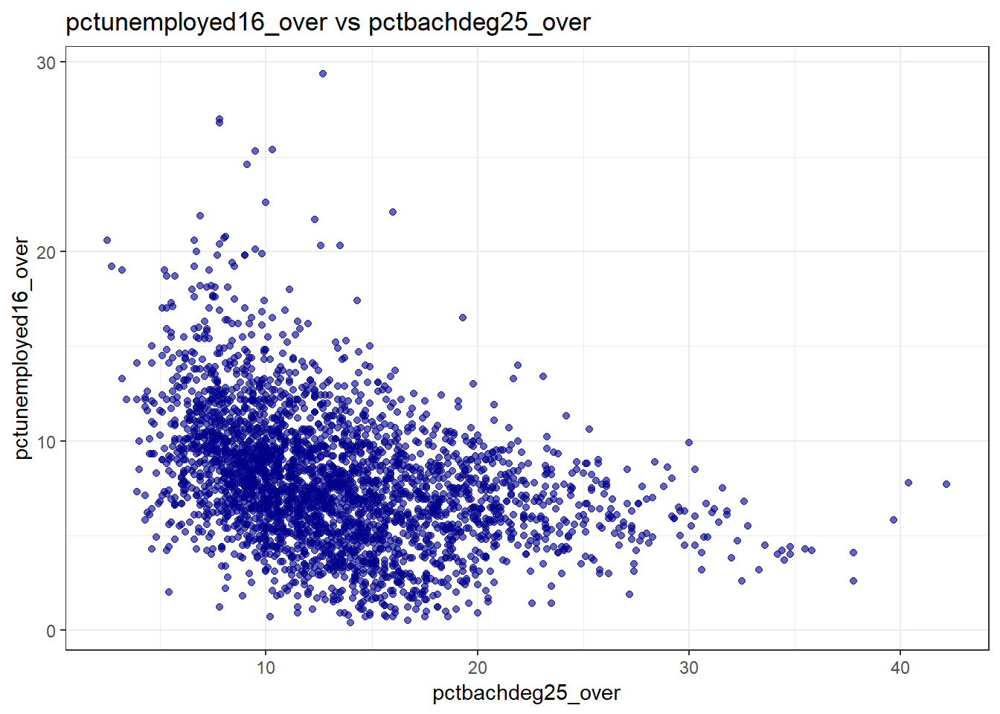
Este es uno de los gráficos con menor fuerza de relación entre todos los analizados, aunque se aprecia una leve tendencia descendente. a mayor título universitario, menor desempleo. La concentración de los datos está considerablemente dispersa, sin un patrón tan marcado como en los pares anteriores. La relación es negativa, pero débil-moderada, sugiriendo que el nivel educativo por sí solo no explica gran parte de la variabilidad del desempleo en los condados.Porcentaje con Cobertura Privada vs Porcentaje con Cobertura Pública
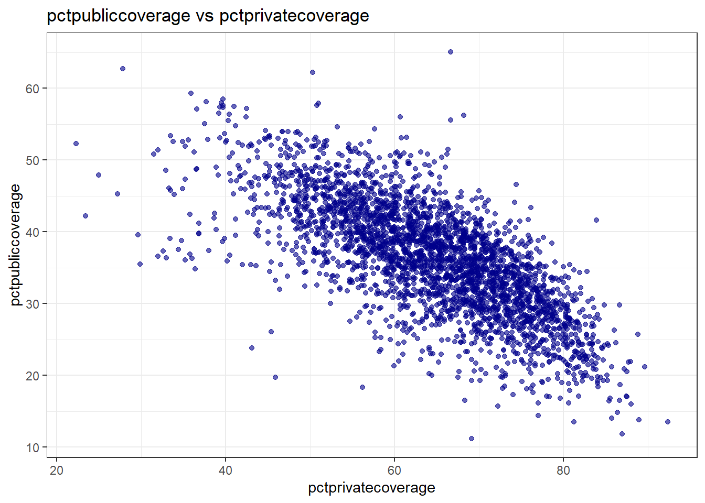
Se observa una tendencia descendente clara, a mayorPorcentaje con Cobertura Privada, menor Porcentaje con Cobertura Pública, lo cual es esperable considerando que ambas variables representan, formas alternativas o competitivas de acceso a seguro médico dentro de un mismo condado.
La distribución de los datos se concentra entre 55% y 76% de cobertura privada, y entre 25% y 42% de cobertura pública.
La relación es negativa y fuerte, una de las más marcadas entre todos los pares que no involucran povertypercent o medincome.
Porcentaje con Cobertura Privada vs Porcentaje de Desempleo
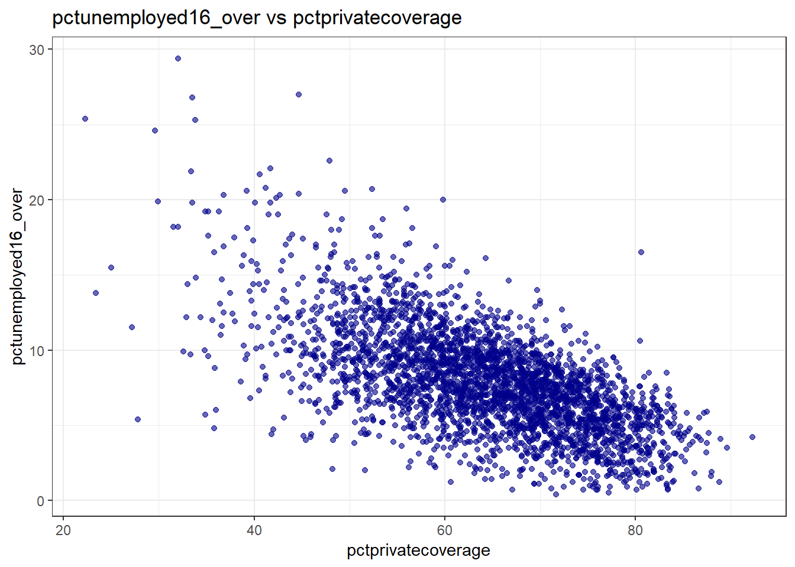
Los puntos muestran una tendencia descendente moderada, a mayorPorcentaje con Cobertura Privada, menor Porcentaje de Desempleo. Esto es coherente con que la cobertura privada suele depender de tener empleo formal.
La distribución de datos se encuentra notablemente concentrada dentro de niveles medio-altos de covertura privada y medio-bajos de desemplo. La cantidad de datos dispersos es bastante moderada a diferencia de muchos otros gráficos.
La relación es negativa y de fuerza moderada-fuerte.
Porcentaje con Cobertura Pública vs Porcentaje de Desempleo
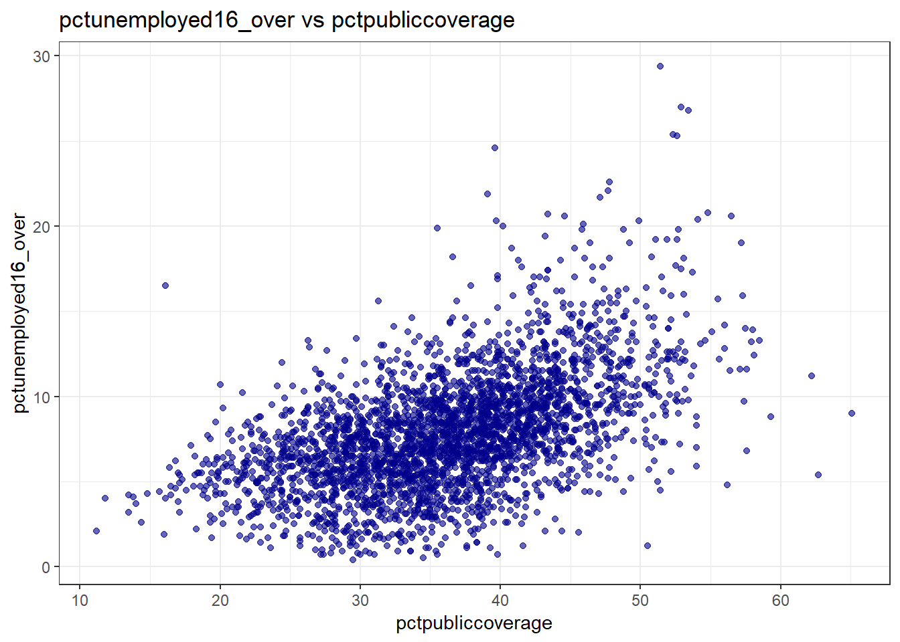
Se observa una tendencia ascendente moderada, a mayorPorcentaje con Cobertura Pública, mayor Porcentaje de Desempleo. Siguiendo la misma línea, la idea de que la dependencia de programas públicos de salud tiende a acompañar contextos de mayor desempleo.
La distribución de los datos es bastante centrada dentro de la cobertura pública y medio-baja dentro de el nivel de desempleo.
La relación es positiva y de fuerza moderada.
Porcentaje con Cobertura Pública vs Porcentaje de Desempleo
##Ingeniería de Características
Aplicando ingeniería de características entre pctprivatecoverage y pctpubliccoverage
para crear así una nueva variable (coverage_balance) que describe el balance entre las coberturas pública y privada.
df <- df %>%
mutate(
coverage_balance = pctprivatecoverage - pctpubliccoverage,
) %>%
select(-pctprivatecoverage, -pctpubliccoverage)
df %>%
select(coverage_balance)%>%
head()## coverage_balance
## 1 42.2
## 2 39.1
## 3 21.6
## 4 13.1
## 5 17.6
## 6 16.8Histograma y diagrama de cajas: coverage_balance
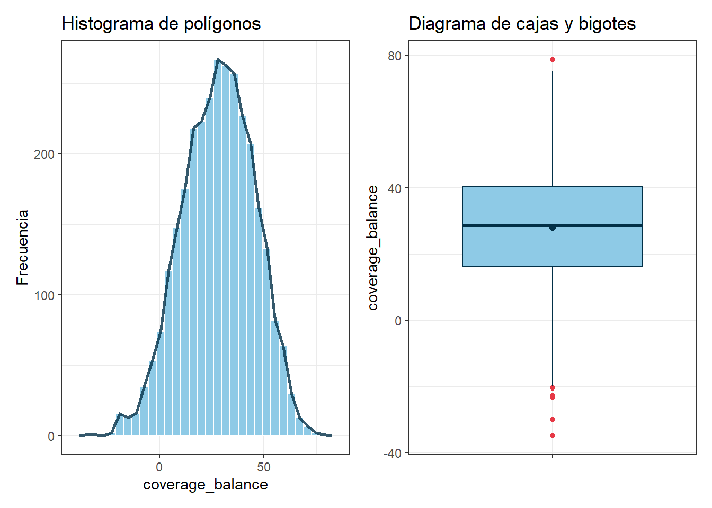
El histograma decoverage_balance muestra una distribución unimodal y aproximadamente simétrica, con una leve inclinación hacia la izquierda, concentrando la mayoría de las observaciones entre 15 y 50 aproximadamente. El diagrama de cajas y bigotes confirma esta simetría relativa, evidenciando muy pocos valores atípicos en ambos extremos (solo 6 condados por debajo, con valores negativos que indican una leve inclinación hacia la cobertura pública, y 1 condado por encima, cercano a 78.8). Esta escasa presencia de outliers y su distribución equilibrada en ambas colas es consistente con el coeficiente de asimetría cercano a cero (-0.17) y la curtosis moderada (2.75), sugiriendo que, la mayoría de los condados presentan un balance de cobertura relativamente predecible y sin concentraciones extremas, con una inclinación general hacia la cobertura privada por sobre la pública (mediana de 28.6).
1.6 Análisis exploratorio bivariado entre las variables independientes y la variable categórica
Porcentaje de pobreza VS Rangos de ingreso medio
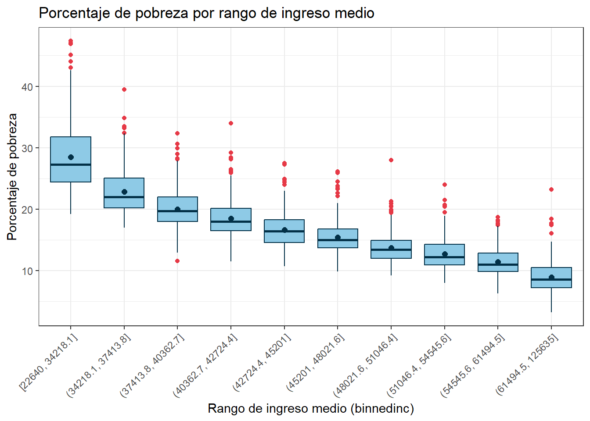
El porcentaje de pobreza presenta una relación descendente marcada y consistente a lo largo de los diez rangos de ingreso medio: el grupo con menor ingreso ([22640, 34218.1]) exhibe la mediana más alta de pobreza, cercana al 27%, mientras que el grupo con mayor ingreso ((61494.5, 125635]) presenta la mediana más baja, en torno al 9%. Esta caída de aproximadamente 18 puntos porcentuales a lo largo del espectro de ingreso confirma, desde una perspectiva categórica, la fuerte relación negativa entre pobreza e ingreso ya observada en el análisis bivariado del EDA. Adicionalmente, se aprecia que la dispersión de la pobreza es notablemente mayor en los grupos de menor ingreso, con cajas más amplias y una cantidad considerable de valores atípicos superiores, mientras que en los grupos de mayor ingreso la distribución se vuelve más compacta y homogénea, sugiriendo que la pobreza es un fenómeno más variable y heterogéneo en las regiones económicamente más desfavorecidas.
ingreso medio VS Rangos de ingresos medios
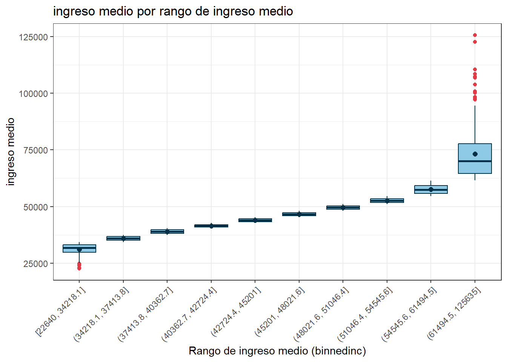
Como es de esperarse dado que binnedinc se construye directamente a
partir de esta variable, la relación entre medincome y el rango de
ingreso medio es marcadamente ascendente a lo largo de todos los grupos:
cada categoría sucesiva presenta una mediana de ingreso mayor que la
anterior, comenzando alrededor de 31000 en el grupo más bajo y llegando a
cerca de 73000 en el grupo más alto. La dispersión dentro de cada grupo es
mínima en las primeras nueve categorías, reflejando que los puntos de
corte de binnedinc efectivamente segmentan el ingreso en rangos estrechos
y bien definidos. Sin embargo, el último grupo ((61494.5, 125635])
constituye una excepción notable: al ser un intervalo abierto que agrupa
todos los ingresos superiores a 61494.5 sin un límite superior definido,
presenta una caja considerablemente más amplia y una cantidad importante
de valores atípicos que se extienden hasta cerca de 125000, lo cual es una
consecuencia natural de cómo fue construido este último rango, y no un
hallazgo sustantivo sobre la variable en sí.
Porcentaje con Título Universitario VS Rangos de ingresos medios
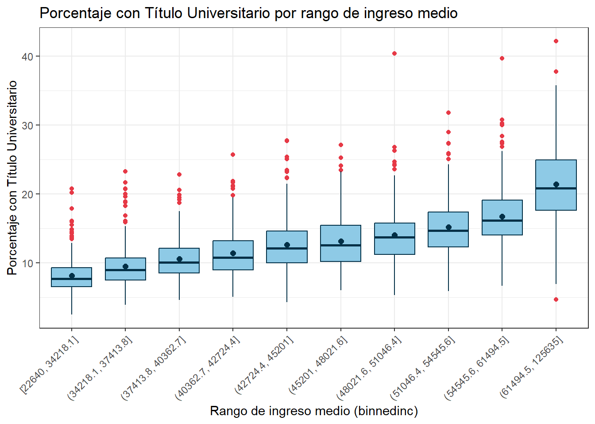
El porcentaje de personas con título universitario muestra una relación ascendente clara y prácticamente monótona a lo largo de los rangos de ingreso: el grupo de menor ingreso presenta una mediana de apenas 8%, mientras que el grupo de mayor ingreso alcanza una mediana de 21%, más del doble. Este patrón es coherente con la lógica socioeconómica esperada, donde un mayor nivel educativo se traduce en mejores oportunidades laborales y, por ende, en ingresos más altos. Es interesante notar que la dispersión de esta variable aumenta progresivamente junto con el ingreso, siendo los grupos de mayor ingreso los que presentan cajas más amplias y una mayor cantidad de valores atípicos superiores (llegando hasta porcentajes cercanos al 40%), lo que sugiere que, si bien el ingreso alto generalmente se asocia con mayor educación, existe una heterogeneidad considerable dentro de las regiones más ricas en cuanto al nivel educativo de su población.
Porcentaje del balance entre las coberturas de salud VS Rangos de ingresos medios
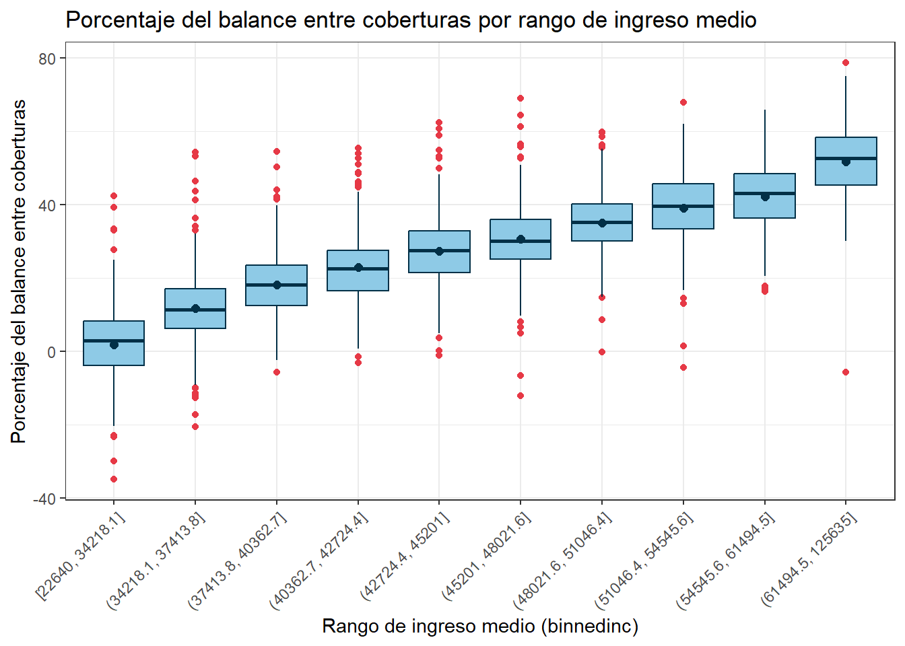
El balance de cobertura médica muestra una tendencia ascendente clara a lo
largo de los rangos de ingreso: en el grupo de menor ingreso, la mediana
se ubica cerca de 0, indicando un equilibrio casi total entre cobertura
pública y privada, mientras que en el grupo de mayor ingreso la mediana
supera los 50 puntos, reflejando un predominio marcado de la cobertura
privada. Este patrón confirma, de forma coherente, lo observado
previamente al examinar pctprivatecoverage y pctpubliccoverage por
separado: a medida que aumenta el ingreso, las regiones dependen cada vez
más de seguros privados y cada vez menos de programas públicos de salud.
Asimismo, se observa que la dispersión es mayor en los grupos de menor
ingreso (incluyendo valores negativos, que indican predominio de cobertura
pública), mientras que en los grupos de mayor ingreso la variabilidad se
reduce y se concentra casi exclusivamente en valores positivos.
Porcentaje de Desempleo VS Rangos de ingresos medios
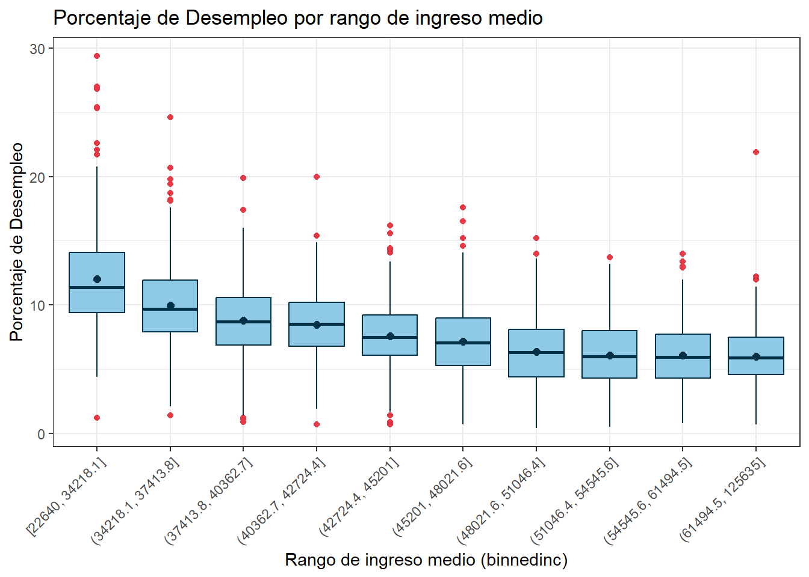
El porcentaje de desempleo presenta una relación descendente, aunque menos
pronunciada que las variables anteriores: el grupo de menor ingreso
muestra una mediana de desempleo de 12%, mientras que el grupo de mayor
ingreso registra una mediana de apenas 6%, es decir, la mitad. A diferencia
de povertypercent y pctbachdeg25_over, donde la tendencia era muy
marcada y consistente, aquí se observa una disminución más gradual y con
mayor superposición entre grupos intermedios, sugiriendo que el desempleo,
si bien está relacionado con el nivel de ingreso, depende también de otros
factores no capturados directamente por esta variable. La dispersión es
considerablemente mayor en los grupos de menor ingreso, con cajas más
amplias y numerosos valores atípicos superiores (algunos superando el 25%
de desempleo), mientras que en los grupos de mayor ingreso la distribución
se vuelve más compacta, reflejando una menor variabilidad en las
condiciones laborales de las regiones más prósperas.